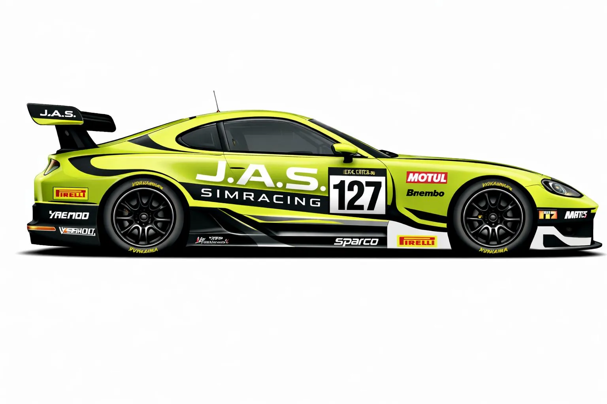

J.A.S. Simracing
Nacimos para competir con constancia y estilo. J.A.S. Simracing es una escudería orientada a la mejora continua: setups sólidos, ritmo consistente y una identidad visual inconfundible en pista. En cada ronda buscamos lo mismo: ser limpios, ser rápidos y pelear hasta la bandera.
Garage
3 coches • 1 identidad
Filosofía en pista
Priorizamos la regularidad y la toma de decisiones. Menos errores, más ritmo: trazadas limpias, gestión de neumáticos y respeto en batalla. El objetivo no es “una vuelta perfecta”, es una carrera completa.
Branding
Verde lima como firma visual, negro/gris como base. El escudo representa la identidad del equipo y el vinilo “J.A.S. SIMRACING” es la marca que acompaña cada livery.